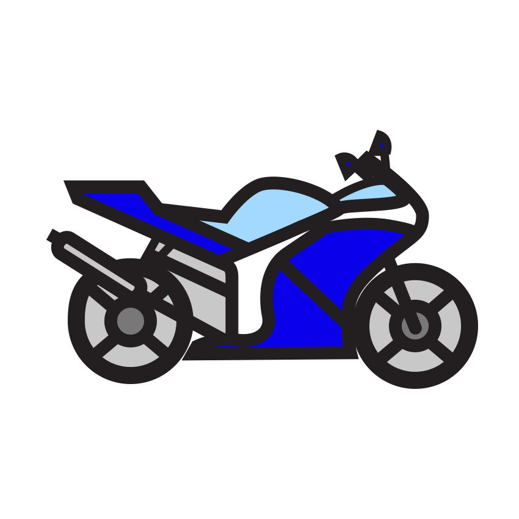
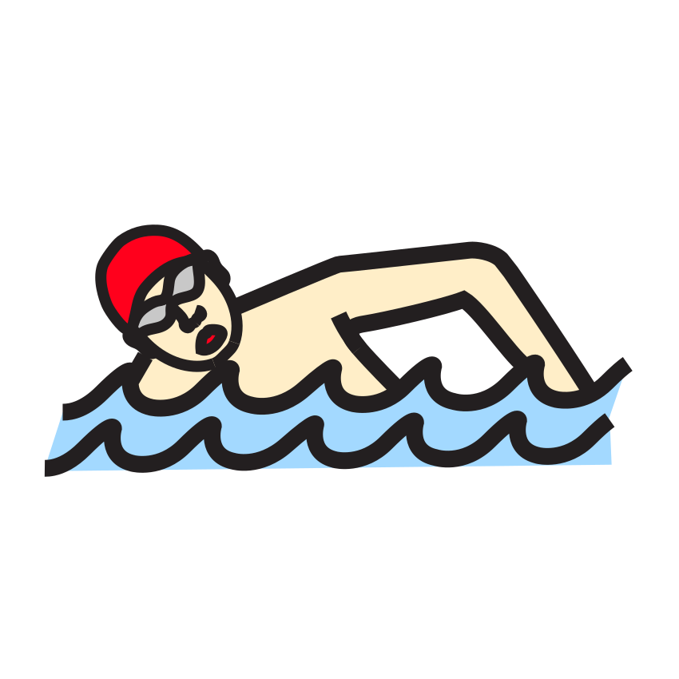

Prénom : Date :
Période 1 · Fiche élève 1
Phonologie — syllabes (éval. 1.3)
Je compte les syllabes
Consigne : 1. Frappe les syllabes dans tes mains, puis dessine un rond dans la case pour chaque syllabe. 2. Frappe le mot et colorie la case qui donne son nombre de syllabes.
1

pigeon

fourmi
2
 moto | 1 | 2 | 3 |
 cinéma cinéma | 1 | 2 | 3 |
 chat chat | 1 | 2 | 3 |
 piscine | 1 | 2 | 3 |
★ Défi : frappe et compte les syllabes de HÉLICOPTÈRE et de VÉTÉRINAIRE , puis écris le nombre en chiffre :
Compétence : scander et dénombrer les syllabes d’un mot.A ☐ · EC ☐ · NE ☐
Prénom : Date :
Période 1 · Fiche élève 2
Lettres et écriture (éval. 1.4 / 1.5)
Les lettres de la ville
Consigne : 1. Entoure toutes les lettres de ton prénom dans la grille. 2. Copie les mots en lettres capitales, puis écris ton prénom. 3. Dans la bande, entoure le mot PARC chaque fois que tu le vois.
1J’entoure les lettres de mon prénom.
| A | L | E | M | O | R | I | S | T | U | N | C | P |
| B | J | H | É | D | Y | F | G | K | V | W | X | Z |
| a | l | e | m | o | r | i | s | t | u | n | c | p |
2Je copie en capitales, puis j’écris mon prénom.
Mon prénom :
3
PARCPARCPRACPARCPACRPARCBARC
Compétences : reconnaître les lettres capitales ; copier des mots ; écrire son prénom ; discriminer un mot.A ☐ · EC ☐ · NE ☐
Prénom : Date :
Période 1 · Fiche élève 3
Mathématiques — quantités (éval. 1.7)
Je compte les animaux de la ville
Consigne : 1. Compte les animaux et écris le chiffre dans la case. 2. Relie chaque dé au bon chiffre. 3. Dessine autant de ronds que le chiffre demandé.
1Je compte et j’écris le chiffre.
2Je relie chaque dé au bon chiffre.
Compétences : dénombrer jusqu’à 6 ; associer quantité, constellation et écriture chiffrée.A ☐ · EC ☐ · NE ☐
Prénom : Date :
Période 1 · Fiche élève 5
Mathématiques — formes planes (éval. 1.9)
Les formes des façades
Consigne : 1. Colorie les carrés en rouge, les rectangles en bleu, les triangles en vert et les disques en jaune. Attention, certaines formes sont penchées ! 2. Compte chaque forme et écris le nombre.
2
carrés : rectangles : triangles : disques :
Compétences : reconnaître les formes dans toutes les orientations ; les dénombrer.A ☐ · EC ☐ · NE ☐
Prénom : Date :
Période 1 · Fiche élève 6
Mathématiques — motifs organisés (éval. 1.10)
Je continue les guirlandes de la ville
Consigne : 1. Regarde bien chaque guirlande. Dessine et colorie ce qui vient ensuite dans les cases vides. 2. J’invente ma guirlande. 3. Guirlande experte : trois couleurs se suivent, continue-la.
2J’invente ma guirlande : je dessine mon propre motif qui se répète.
Compétence : reproduire, prolonger et créer un motif répétitif (AB, AAB, ABC).A ☐ · EC ☐ · NE ☐
Prénom : Date :
Période 1 · Fiche élève 7
Lettres — reconstituer des mots (éval. 1.4)
Je reconstitue les mots de la ville
Consigne : 1. Découpe les lettres en bas de la feuille. Colle-les dans les cases pour écrire BUS, VÉLO et PIGEON, comme le modèle. 2. Écris chaque mot au crayon sur la ligne.
✂ - - - - - - - - - - - - - - - - - - - - - - - - - - - - - - - - - - - - - - - - - - - - - - - - - - - - - - - - - - - - - - - - - - - - - - - - -
Compétences : reconnaître les lettres capitales, remettre les lettres dans l’ordre, écrire le mot.A ☐ · EC ☐ · NE ☐
Crédits des images
Les illustrations de ce cahier sont des pictogrammes Mulberry Symbols (Paxtoncrafts Charitable Trust, licence CC BY-SA 4.0, mulberrysymbols.org) et des pictogrammes ARASAAC (auteur : Sergio Palao, propriété du Gouvernement d’Aragon, Espagne, licence CC BY-NC-SA, arasaac.org). Merci à leurs auteurs et autrices.